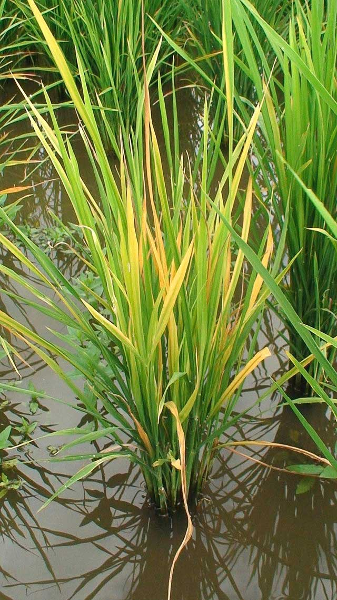
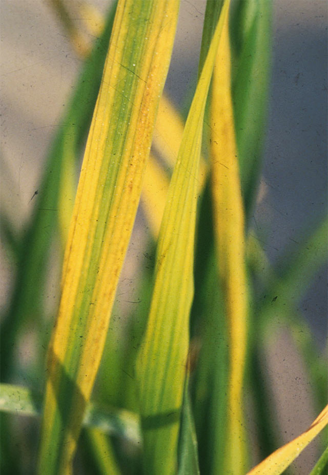
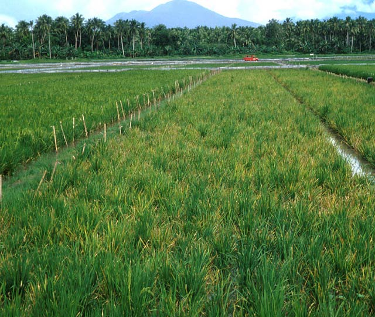
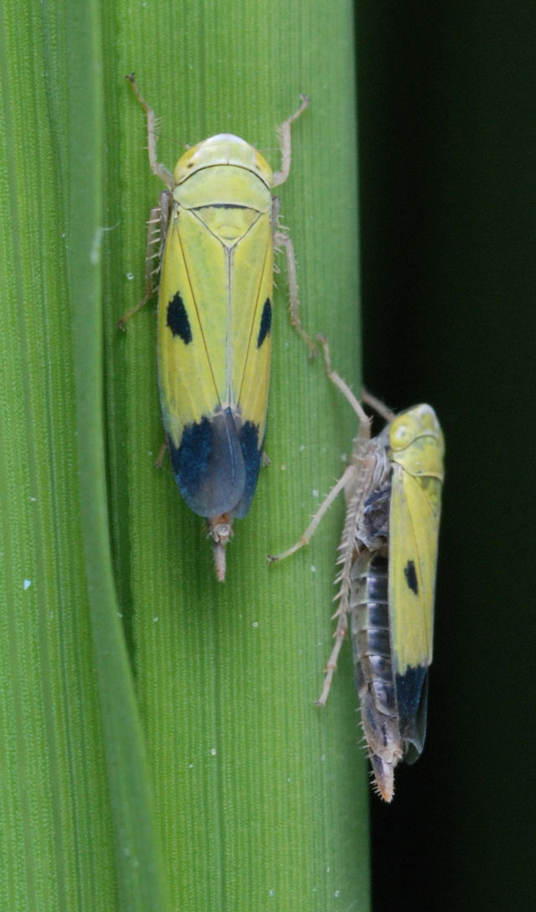

Tungro
 What it does
What it does
Rice tungro disease is caused by the combination of two viruses, which are transmitted by leafhoppers. It causes leaf discoloration, stunted growth, reduced tiller numbers and sterile or partly filled grains.
Tungro infects cultivated rice, some wild rice relatives and other grassy weeds commonly found in rice paddies.
Why and where it occurs
Tungro disease viruses are transmitted from one plant to another by leafhoppers that feed on tungro-infected plants. The most efficient vector is the green leafhopper.
Leafhoppers can acquire the viruses from any part of the infected plant by feeding on it, even for a short time. It can, then, immediately transmit the viruses to other plants within 5−7 days. The viruses do not remain in the leafhopper's body unless it feeds again on an infected plant and re-acquires the viruses.
Tungro infection can occur during all growth stages of the rice plant. It is most frequently seen during the vegetative phase. Plants are most vulnerable at tillering stage.
Tungro incidence depends on the availability of the virus sources and vector population. Other than infected rice plants in the farmer's field, other primary sources for tungro, include:
- stubble of previous crops
- new growth from infected stubbles that had not been properly plowed under and harrowed effectively
- volunteer rice
- infected plants in nearby rice fields
Seedlings raised in nurseries or seedbeds can also be infected with Tungro prior to transplanting and can be a primary source of virus.
Transplanting seedlings from nurseries in tungro-infected areas has also shown to increase infection rates in the field, particularly, in cases where seedbed is in a tungro-endemic area or when the nursery duration is 5−6 weeks.
However, this is not believed to be a very strong mechanism in initiating epidemics, because the competitiveness of tungro-infected seedlings is low; they can die rapidly after transplanting.
Why is it important
Tungro is one of the most damaging and destructive diseases of rice in South and Southeast Asia. In severe cases, Tungro susceptible varieties infected at an early growth stage could have as high as 100% yield loss.
Once tungro is present in the field, it increases rapidly in young rice plants. Leafhopper vectors prefer to feed on young rice plants. They also acquire tungro viruses more efficiently from younger infected plants.
How to identify
Check for presence of leafhoppers.
Check leaves for discoloration.
Yellow or orange-yellow discoloration is noticeable in tungro-infected plants. Discoloration begins from the leaf tip and extends down to the blade or the lower leaf portion. Infected leaves may also show mottled or striped appearance, rust-colored spots, and inter-veinal necrosis.
|  |  |  |  |
| Tungro-infected plant | Yellowing of leaves | Tungro-infected field | Green leafhopper |
Tungro-infected plants also show symptoms of stunting, delayed flowering which may delay maturity, reduced number of tillers, small and not completely exserted panicles, as well as a higher than normal percentage of sterile panicles or partially filled grains, covered with dark brown blotches.
The degree of stunting and of leaf discoloration varies with rice varieties, strains of the viruses, the age of the plant when infected, and with the environment. In varieties that carry some resistance to the disease, infected plants exhibit no discoloration or only a mild discoloration that may disappear as the plants mature.
Tungro symptoms can be mistaken for physiological disorders.
Specifically,
- the yellowing of the plant and its stunted height can be confused as nitrogen and zinc deficiencies and water stress,
- pest infestation such as stem borer infestation, plant hopper infestation, and rat damage, and
- other diseases such as grassy stunt virus disease and orange leaf.
Where available, Tungro can be confirmed using serological tools such as Latex agglutination test, Enzyme Linked Immunosorbent Assays (ELISA) and Rapid Immunofilter Paper Assays (RIPA).
How to manage
Once a rice plant is infected by tungro, it cannot be cured.
Preventive measures are more effective for the control of tungro than direct disease control measures. Using insecticides to control leafhoppers is often not effective, because green leafhoppers continuously move to surrounding fields and spread tungro rapidly in very short feeding times.
The most practical measures at present, include
- Grow tungro or leafhopper resistant varieties.
This is the most economical means of managing the disease. There are tungro-resistant varieties available for the Philippines, Malaysia, Indonesia, India, and Bangladesh.
Contact your local agriculture office for up-to-date lists of varieties available. - Practice synchronous planting with surrounding farms.
Delayed or late planting, relative to the average date in a given area, makes the field susceptible for Tungro. Late-planted fields also pose a risk to early planting in the next season. - Adjust planting times to when green leafhopper are not in season or abundant, if known
- Plow infected stubbles immediately after harvest to reduce inoculum sources and destroy the eggs and breeding sites of green leaf hopper.
-
Content expert: Jo Catindig (email: j.catindig@irri.org) and Bryce Blackman (email: b.blackman@irri.orgp).
Disclaimer: All information are taken from http://www.knowledgebank.irri.org/